Settings: Display

- 1
Use this when buttons, menus, and window controls are all too small. If only the conversation is hard to read, increase Chat Window Font Size in the Text tab instead; that gives you larger text without enlarging every panel. This slider takes effect when you press Apply.
- 2
Use this to recover a lost panel or an awkward arrangement. It resets the window layout, not your graphics, audio, and other preferences.
Menu options and slider ranges
| Control | Available choices or range |
|---|---|
| UI Scale | 0.75–4 |
| Toolbar Placement | Inside Inventory · Inside Players |
| Color Theme | Follow system · AccentDark · AccentLight · Arcade · Candy · Coffee · Dusk · Forest · HighContrast · Midnight · NeonNight · Paper · SeaGlass |
| Style Theme | Borderless · Default · Flat · HighContrast · Outline · Rounded |
Settings: World

- 1
This keeps recently seen players easy to select after they leave the view. Being listed here does not mean a player is still on screen. Use the group to find a familiar name again, but check the game view before assuming they are still nearby.
- 2
Names already indicate sharing: an underline means you share with that player, bold means they share with you, and both styles mean mutual sharing. This option adds icons without replacing those styles. Hover an icon if its direction is unclear. Italics indicate a clanmate and can appear with any sharing style.
Menu options and slider ranges
| Control | Available choices or range |
|---|---|
| Status bar opacity | 0.1–1 |
| Max Night Level | 0–100 |
| Name Background Opacity | 0–1 |
| Player Health Display | Color bar · Classic name color |
| Color Bar Position | Above name · Below name |
| Modern Bar Thickness | 1–8 |
Settings: Text

- 1
Chat, Console, overhead names, and speech bubbles have independent font sizes. If you separate Chat from Console and one looks smaller, adjust its own slider. Enlarging chat text also wraps lines sooner, so a wider message pane may make more difference than increasing the font again.
Menu options and slider ranges
| Control | Available choices or range |
|---|---|
| Name Font Size | 5–48 |
| Inventory Font Size | 5–48 |
| Players List Font Size | 5–48 |
| Console Font Size | 4–48 |
| Chat Window Font Size | 4–48 |
| Chat Bubble Font Size | 4–48 |
Settings: Bubbles
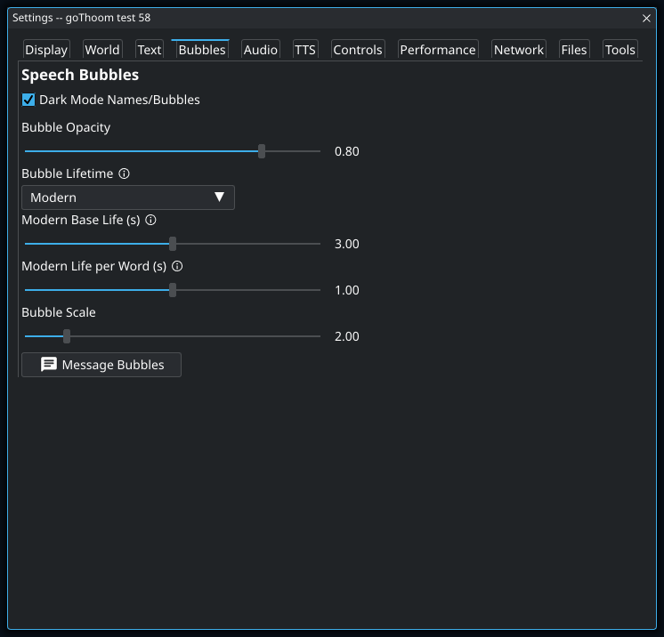
- 1
Modern mode adds reading time for each word, so a long sentence stays longer than a short one. Increase the base time if even short messages vanish too soon; increase the per-word time if only long messages are difficult to finish. Classic mode uses a fixed lifetime instead.
Menu options and slider ranges
| Control | Available choices or range |
|---|---|
| Bubble Opacity | 0–1 |
| Bubble Lifetime | Modern · Classic |
| Modern Base Life (s) | 1–5 |
| Modern Life per Word (s) | 0–2 |
| Bubble Scale | 1–8 |
Settings: Audio
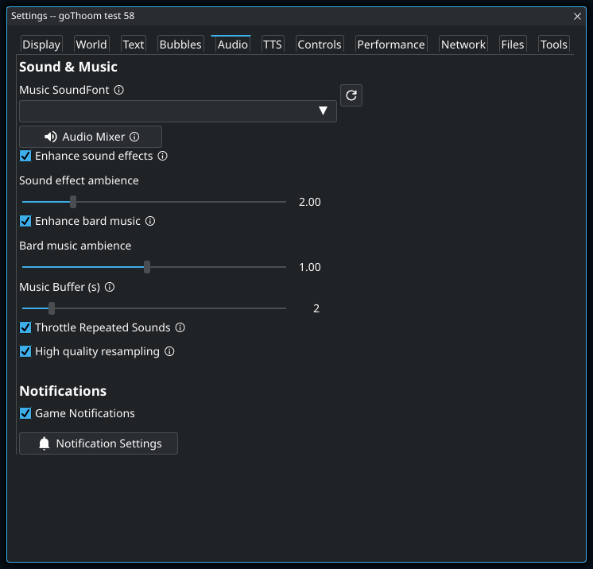
- 1
A SoundFont supplies the instrument sounds used for bard music. Changing it can change how the same tune sounds; it does not replace game sound effects or a Piper speaking voice. If the menu is empty, install a SoundFont through Files → Download Files.
Menu options and slider ranges
| Control | Available choices or range |
|---|---|
| Sound effect ambience | 0.1–10 |
| Simultaneous sound spread (ms) | 1–100 |
| Bard music ambience | 0.1–2 |
| Music Buffer (s) | 1–10 |
Settings: TTS

- 1
The voice menu is populated from installed Piper models. The empty menu in this example means a usable voice has not been found; enabling speech alone does not provide one. Download the TTS files, select a voice, then test a sentence before relying on spoken chat. The Audio mixer controls speech volume separately.
Menu options and slider ranges
| Control | Available choices or range |
|---|---|
| TTS Speed | 0.5–2 |
Settings: Controls

- 1
With this off, Enter opens the input bar and Enter again sends the message. With it on, you can begin typing without first opening the bar. Chat and Console share one draft and sent-message history, so switching between their input bars does not give you a second independent message.
Menu options and slider ranges
| Control | Available choices or range |
|---|---|
| Keyboard Walk Speed | 0.1–1 |
Settings: Performance
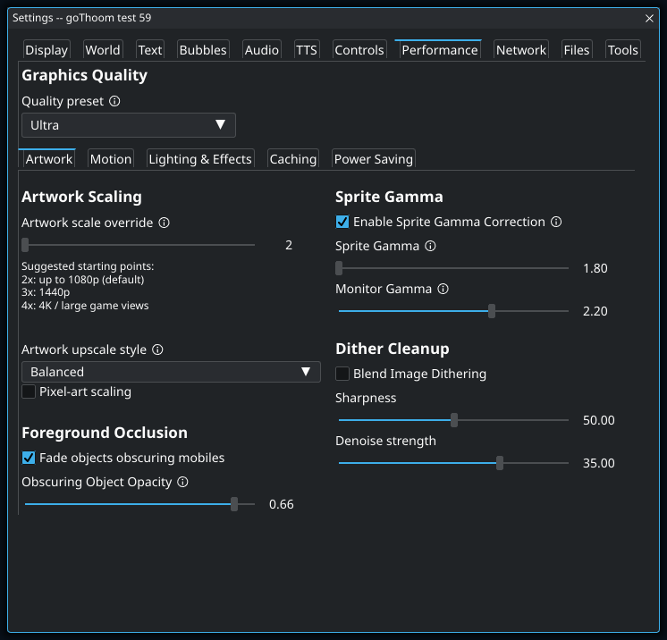
- 1
A preset changes several graphics choices together. Use it as a starting point, then adjust individual effects while comparing the same scene. Selecting another preset can replace that tuning, so choose the preset before making detailed changes. UI and text sizing are controlled elsewhere.
Menu options and slider ranges
| Control | Available choices or range |
|---|---|
| Quality preset | Lowest · Low · Medium · High · Ultra · Custom |
| Artwork scale override | 2–4 |
| Artwork upscale style | Off · Crisp · Balanced · Smooth · Ultra Smooth |
| Sprite Gamma | 1.8–2.4 |
| Monitor Gamma | 1.8–2.4 |
| Sharpness | 0–100 |
| Denoise strength | 0–50 |
Performance: Artwork

- 1
This uses replacement PNGs you have installed in an hdimg folder; enabling it does not download a pack. The original picture size and placement stay the same. Turn it off to compare with the original artwork. Animated Replacement Effects have their own switch in Lighting & Effects.
Menu options and slider ranges
| Control | Available choices or range |
|---|---|
| Quality preset | Lowest · Low · Medium · High · Ultra · Custom |
| Artwork scale override | 2–4 |
| Artwork upscale style | Off · Crisp · Balanced · Smooth · Ultra Smooth |
| Sprite Gamma | 1.8–2.4 |
| Monitor Gamma | 1.8–2.4 |
| Sharpness | 0–100 |
| Denoise strength | 0–50 |
Performance: Motion
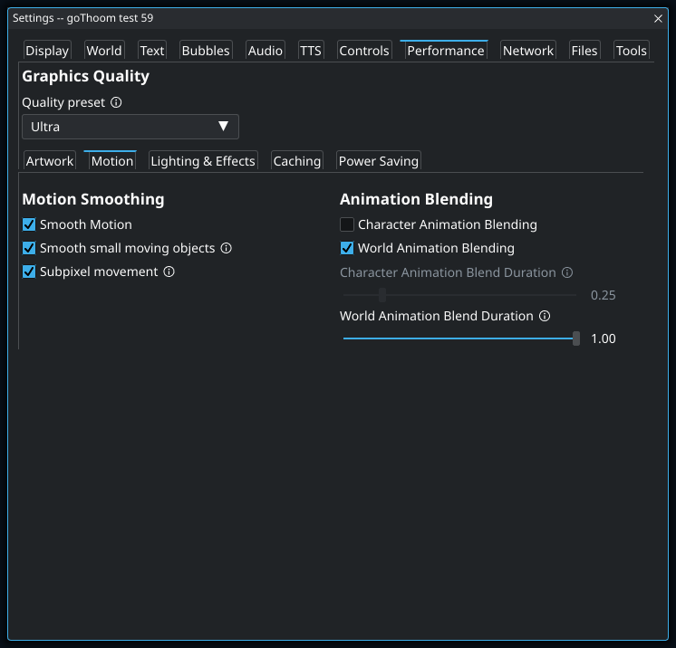
- 1
This blends between a character’s animation poses. It is separate from smoothing the character’s movement across the screen. If walking feels smooth but the character looks smeared during pose changes, shorten the character blend duration or disable this option while leaving Smooth Motion on.
Menu options and slider ranges
| Control | Available choices or range |
|---|---|
| Quality preset | Lowest · Low · Medium · High · Ultra · Custom |
| Character Animation Blend Duration | 0.1–1 |
| World Animation Blend Duration | 0.1–1 |
Performance: Lighting & Effects
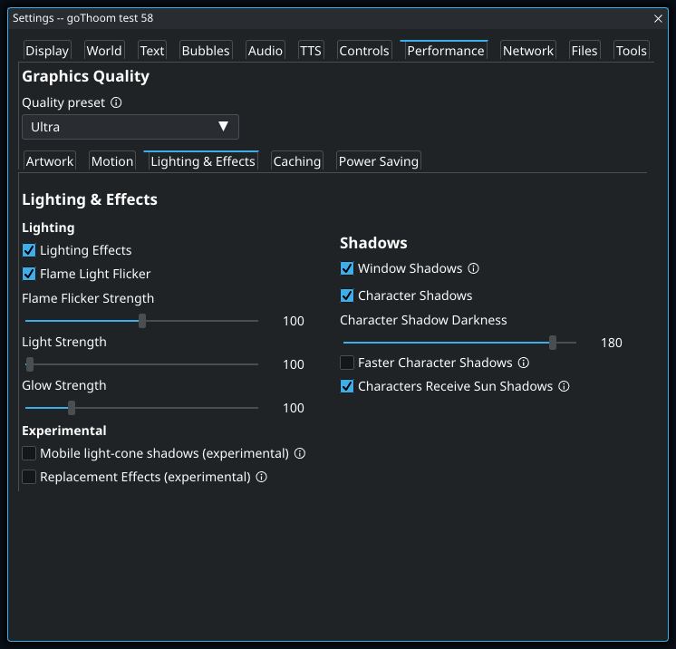
Menu options and slider ranges
| Control | Available choices or range |
|---|---|
| Quality preset | Lowest · Low · Medium · High · Ultra · Custom |
| Flame Flicker Strength | 0–200 |
| Light Strength | 0–200 |
| Glow Strength | 0–200 |
| Character Shadow Darkness | 1–200 |
Performance: Caching
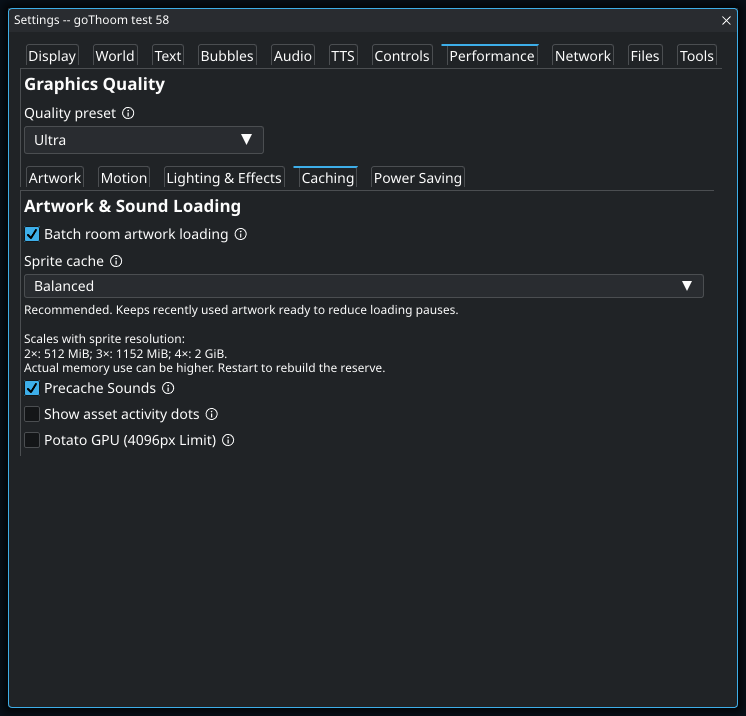
Menu options and slider ranges
| Control | Available choices or range |
|---|---|
| Quality preset | Lowest · Low · Medium · High · Ultra · Custom |
| Sprite cache | Minimal · Compact · Balanced · Generous · Maximum |
Performance: Power Saving
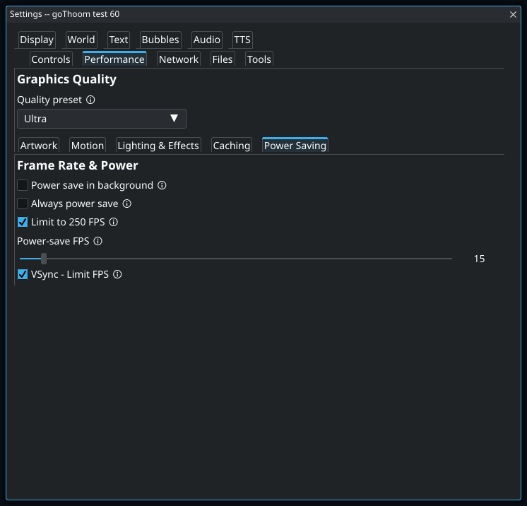
- 1
This applies the power-saving frame rate even while you are using the client. If the game seems capped below the rate you expected, check this before reducing graphics quality. Power save in background applies when the client loses focus; the two settings serve different situations.
Menu options and slider ranges
| Control | Available choices or range |
|---|---|
| Quality preset | Lowest · Low · Medium · High · Ultra · Custom |
| Power-save FPS | 1–250 |
Settings: Network
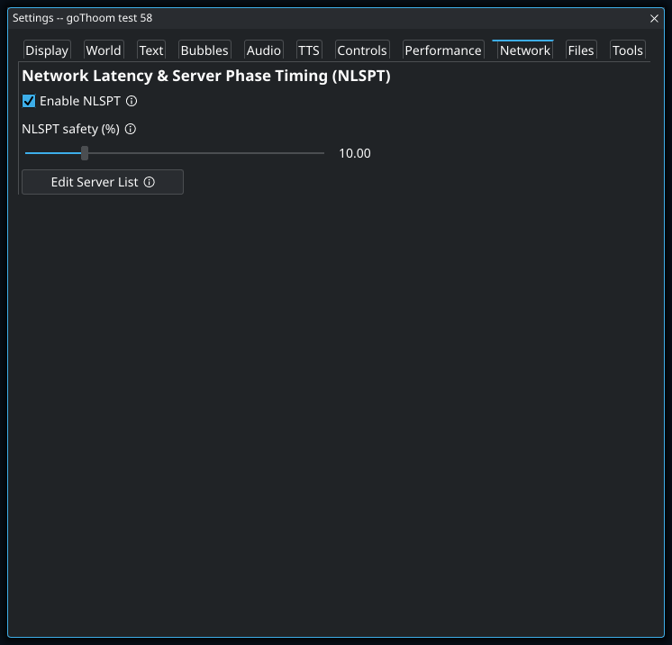
- 1
This adjusts the safety margin for Network Latency & Server Phase Timing, not your internet connection speed. It is a session-only adjustment: it starts at 10% when the client launches and is not saved in settings. Leave the default in place unless you are deliberately comparing timing behavior.
Menu options and slider ranges
| Control | Available choices or range |
|---|---|
| NLSPT safety (%) | 0–50 |
Settings: Files

Settings: Tools
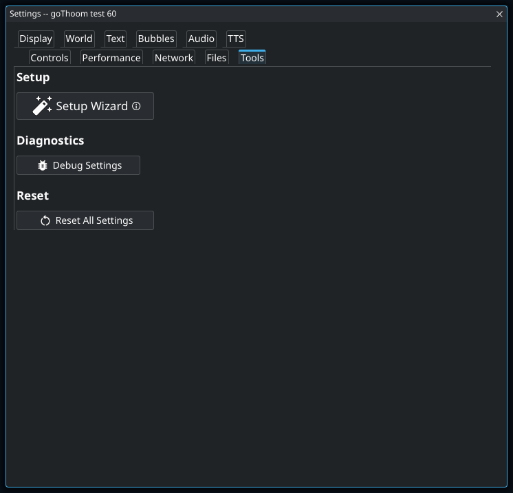
Effects preview controls
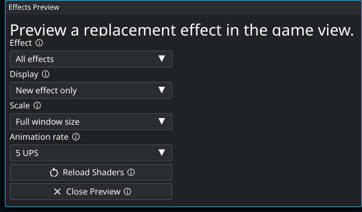
- 1
Use this to match the original sprite’s animation cadence when comparing it with a shader. UPS means original-animation updates per second, not displayed frames per second. The shader remains smooth between updates, and this preview setting does not change live gameplay.
Menu options and slider ranges
| Control | Available choices or range |
|---|---|
| Effect | All effects · Healing · Fire Plume · Violet Fire Plume · Green Fire Plume · Blue Fire Plume · Critical Blood Gush · Aqua Flag · Red Flag · Yellow Flag · Violet Flag · White Flag · Gold Flag · Wall Torch · Wall Torch (mirrored) · Hidden Path Sparkles · Hidden Path Fading · Mystic Ward · Amber Orbit Ward · Lava Pool (compact) · Lava Pool (large) · Neutral Magic Ring · Green Magic Ring · Red Magic Ring · Magenta Magic Ring · Yellow Magic Ring · Cyan Magic Ring · Town Puddle (small) · Town Puddle (large) · Shore Foam (east) · Shore Foam (west) · Shore Foam (north) · Shore Foam (south) · Ward Fading · Gold Teleport · Blue Teleport · Prismatic Teleport · Stone Form · Coin 123 |
| Display | New effect only · Original animation · Original + new effect |
| Scale | At real size · 200% size · Full window size |
| Animation rate | 1 UPS · 2 UPS · 5 UPS · 10 UPS · 20 UPS · 30 UPS |
Arrange tiled windows

- 1
Extra width beside the playfield can become wider lists instead of empty space. With automatic sizing on, dragging either game divider slides the game sideways and moves both dividers together. Turn it off to keep the current sizes and resize each side independently. Turning it back on recalculates around the game’s current position.
Menu options and slider ranges
| Control | Available choices or range |
|---|---|
| Start with | Current arrangement · Game centered · Game on a side · Messages below game · Messages above game · Messages above and below · Full-width messages below · Full-width messages above · Messages left, lists right |
| Move selected pane | Swap · Left of · Right of · Above · Below |
Separate message panes

- 1
Here Chat is selected and Above is chosen. Clicking Console in the preview will put Chat above Console. Choosing an action alone does not move a pane; click a source and then a target. Undo restores the previous editor arrangement, and the real workspace dividers control the final sizes.
Menu options and slider ranges
| Control | Available choices or range |
|---|---|
| Start with | Current arrangement · Game centered · Game on a side · Messages below game · Messages above game · Messages above and below · Full-width messages below · Full-width messages above · Messages left, lists right |
| Move selected pane | Swap · Left of · Right of · Above · Below |
Add a character

- 1
You can add the character without entering a password here. When you later press Connect, the client asks for it if no password is available for that login. Adding a character only creates a local login entry; it does not create a Clan Lord account.
Audio mixer

Menu options and slider ranges
| Control | Available choices or range |
|---|---|
| Sound effect enhancement strength. 1.00 is the normal enhanced mix. | 0.1–10 |
Notification settings

Menu options and slider ranges
| Control | Available choices or range |
|---|---|
| Display Duration (sec) | 1–30 |
Speech bubble settings

Take a screenshot

- 1
This hides overhead names for the capture without changing your normal name-tag preference. It does not remove names from Chat, Console, or Players if you capture the entire client. Check those panels before sharing a screenshot of a private conversation.
Menu options and slider ranges
| Control | Available choices or range |
|---|---|
| Capture | Game view only · Entire client window |
| Format | PNG · JPEG |
Change file locations

- 1
Use copying when the new folder should start with your current files. Different files with the same destination names cause the move to fail rather than overwrite them. The client checks access and verifies the copy before saving the new path. Restart after a successful change so loaded assets and open logs use the new location.
Create a hotkey

- 1
The selected player is resolved when you press the hotkey, not when you save it. This example can therefore inspect any player you select, using the same binding each time. It needs a selection in Players; the player beneath the pointer is a different context value.
Create a text shortcut

- 1
Shortcuts expand the first word when you send a line. With this example, “pp hello” becomes “/ponder hello”; “hello pp” is not expanded. Choose a short word you are unlikely to start an ordinary message with by accident.
Gamepad controls
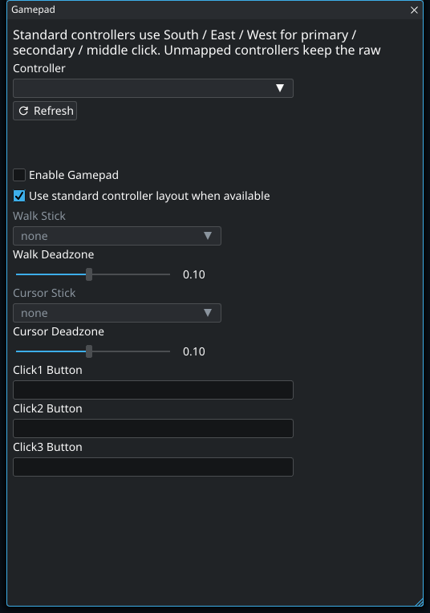
- 1
Leave this on for a controller that exposes a standard layout: the South, East, and West face buttons become primary, secondary, and middle click. If the controller has no standard layout, focus each Click button field and press the physical button you want to assign.
- 2
Increase the deadzone if the character drifts when you release the walk stick. Use the smallest value that stops the drift so gentle movement still registers. Cursor Stick has its own deadzone.
Menu options and slider ranges
| Control | Available choices or range |
|---|---|
| Walk Deadzone | 0.01–0.2 |
| Cursor Deadzone | 0.01–0.2 |
Local streaming
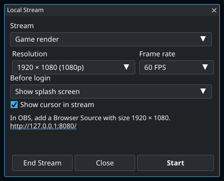
- 1
The operating-system pointer is not captured automatically. Enable this when viewers need to follow where you are pointing; goThoom draws a small cursor indicator into the stream output.
Menu options and slider ranges
| Control | Available choices or range |
|---|---|
| Stream | Game render · Whole game window and UI |
| Resolution | 1280 × 720 (720p) · 1920 × 1080 (1080p) · 2560 × 1440 (1440p) · 3840 × 2160 (4K) |
| Frame rate | 15 FPS · 30 FPS · 60 FPS |
| Before login | Show splash screen · Black |
Legacy macro library

Edit macro command triggers

Edit macro keybindings

Enable scripts for a character

Review a script

- 1
A reload can fail while the previous working copy continues running. Read the status and error before assuming your edited code is active. Validate can help find source problems; if the change requests additional access, review Permissions before trying again.
Grant script permissions

- 1
Yes Boats sends a whisper as your character when it recognizes a boat offer addressed to you. This permission allows that reply; reading the offer and checking your character’s name require separate chat and game-data grants.
- 2
Grant saves only the checked capabilities, and the decision applies to this script across characters. Unchecking something does not automatically adapt the script: a feature that depends on the denied capability may no longer work. Reopen Info → Permissions to change your decision; Block all also disables the script.